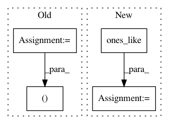

c8523b2dc735a1b82ca6170e6ca349defe9f77fc,examples/transformer.py,,,#,22
Before Change
encoder_output = encoder(src_text["text_ids"][:, :-1],
sequence_length=src_text["length"]-1)
// Decode
outputs, final_state, sequence_lengths = decoder(
initial_state=connector(text_database._hparams.batch_size))
// Build loss
After Change
src_text = text_data_batch["source_text_ids"]
tgt_text = text_data_batch["target_text_ids"]
decoder_inputs = tf.concat((tf.ones_like(tgt_text[:, :1]), tgt_text[:, :-1]), -1)
print("src_text:{}".format(src_text))
encoder_output = encoder(src_text,
sequence_length=text_data_batch["source_length"])
// Decode
print("encoder_output:{}".format(encoder_output.shape))
logits, preds = decoder(decoder_inputs, encoder_output)
print("logits:{}".format(logits.shape))
//istarget = tf.to_float(tf.not_equal(y, 0))
// acc = tf.reduce_sum(tf.to_float(tf.equal(preds,
// Build loss
In pattern: SUPERPATTERN
Frequency: 3
Non-data size: 4
Instances
Project Name: asyml/texar
Commit Name: c8523b2dc735a1b82ca6170e6ca349defe9f77fc
Time: 2017-11-17
Author: shore@pku.edu.cn
File Name: examples/transformer.py
Class Name:
Method Name:
Project Name: tensorflow/ranking
Commit Name: 6bf3f51cd0a312da842157665663c2dad9983248
Time: 2021-01-29
Author: xuanhui@google.com
File Name: tensorflow_ranking/python/losses_impl.py
Class Name: ClickEMLoss
Method Name: _compute_latent_prob
Project Name: dmlc/gluon-nlp
Commit Name: 1f9ad444b5dee8b2562b7bfa1cf9f576fa32a347
Time: 2020-07-31
Author: 37728728+ZheyuYe@users.noreply.github.com
File Name: src/gluonnlp/models/electra.py
Class Name: ElectraForPretrain
Method Name: get_corrupted_tokens